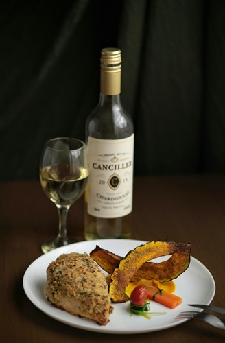

Founded in 2014, The Haukai Restaurant has been providing locals and tourists alike a truly New Zealand culinary experience. Known as the cradle of the nation, Kerikeri is a scenic drive north of Auckland, located 80km away from Northlands largest city of Whangarei.
